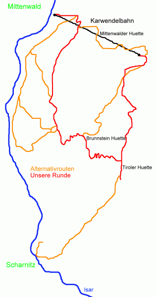
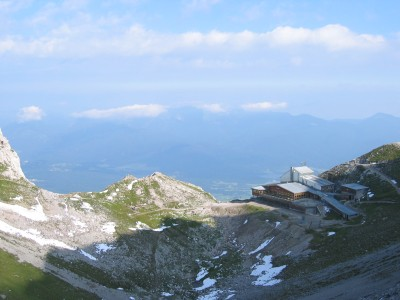
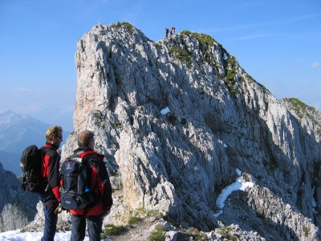
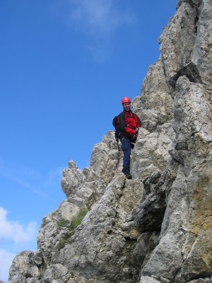
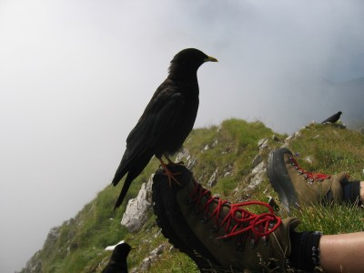
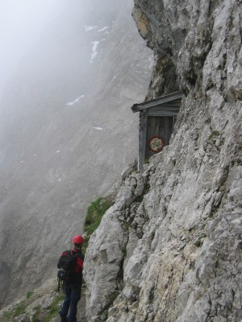
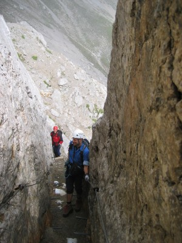
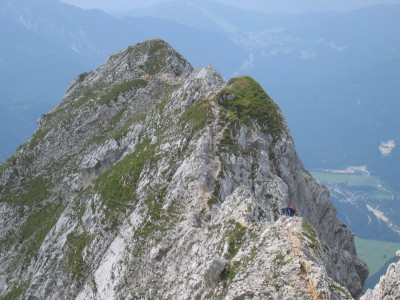
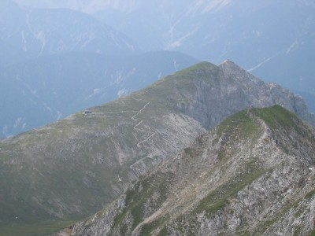
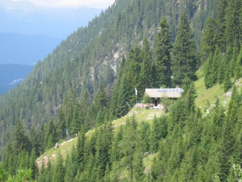

| Home | Kontakt | Steckbrief |
| Wandern/Trekking |
| Klettern/Klettersteige |
| Kanu |
| Fahrradtouren |
|
| Rucksack-Reisen |
| Touren mit Kindern |
| Wissenswertes |
Mittenwalder HöhenwegAnfang August 2005. Das Wetter ist leider zu instabil, um den Jubiläumsgrat zu wagen. Außerdem hat es erst wenige Tage vorher Schneefälle bis 2000m herunter gegeben und die Temperaturen der Zugspitze sprechen nicht für eine eisfreie Begehung. Eine Alternative muss also her. Die ist mit dem Mittenwalder Höhenweg auch schnell gefunden. In den letzten Jahren habe ich dreimal versucht, diesen Weg zu gehen, aber jedes Mal haben mir das Wetter oder ein kaputtes Knie einen Strich durch die Rechnung gemacht. Mittenwald liegt an der Isar und der Bahnlinie Garmisch-Partenkirchen Innsbruck. Sowohl Mittenwald wie auch Scharnitz sind durch ihre Bahnhöfe gut angebunden. Die beste Karte für diese Region ist die Alpenvereinskarte Karwendelgebirge, Westliches Blatt, Nummer 5/1 im Maßstab 1:25.000.

Übersichtskarte Am Morgen des 11ten August 2005 fahren wir mit der ersten Gondel der Karwendelbahn um halb neun Uhr bis zur Bergstation in 2244m Höhe. Während der Fahrt überfliegt man die Mittenwalder Hütte (1515m) und sieht ständig den nicht anspruchslosen Aufstiegsweg. Für knapp 10 Euro erspart man sich die 1324 Höhenmeter Aufstieg.

Bergstation der Karwendelbahn Oben angekommen machen wir einen kurzen Abstecher in den Tunnel zum Dammkar, und von einer Tunnelöffnung schauen wir auf Deutschlands längste Freeride Piste. Im Winter sind hier bei guten Schneebedingungen Abfahrten bis nach Mittenwald möglich. Nach wenigen Minuten kehren wir um und begeben uns zum Einstieg des Klettersteiges. Dort legen wir unsere Ausrüstung an und steigen vorerst noch ohne Helm in den Klettersteig ein. Der Klettersteig ist etwa 5 Kilometer lang, und ungefähr 1500m Drahtseil und einige Leitern sichern die gefährlichsten Stellen ab. Man überschreitet auf ihm diverse Gipfel. Zuerst kommt die Nördliche Linderspitze, dann kurze Zeit später die Mittlere und Südliche Linderspitze. Im weiteren Verlauf Sulzleklammspitze und Kirchlespitze.

Ein wenig Neuschnee liegt noch an schattigen Stellen Der Mittenwalder Höhenweg gilt verglichen mit anderen Klettersteigen als wenig schwierig. Am Anfang sind wir allerdings überrascht, wie abgespeckt und damit glatt die Steine sind. Der Weg wird also ziemlich häufig begangen. Trittsicherheit und gutes Schuhwerk ist hier angesagt. Im Verlauf des Weges wird es aber etwas besser. Einige kleine Restschneefelder von den überraschenden Schneefällen der vergangenen Tage stören nicht wirklich, machen einem aber immer wieder bewusst, dass man im Hochgebirge unterwegs ist und das Wetter bei optimalen Bedingungen leichte Wege schnell in eine ziemlich gefährlich Angelegenheit verwandeln kann.

Gut gesichert auf dem Klettersteig So sollte man auch vor Begehung dieses Gratweges den Wetterbericht einholen und vor allen Dingen bei Gewitterneigung von einer Begehung absehen. Das viele Eisen auf dem Grat wirkt dann nämlich als Blitzableiter, wie man an einigen Einschlagspuren am Drahtseil sehen kann.

Angstfreie Bergdohlen Schön an diesem Klettersteig ist, dass er einem immer wieder Stellen bietet, an denen man ausruhen kann und Nachfolgende passieren können. Ganz im Gegensatz zum Höllentalanstieg auf die Zugspitze, wo jede Pause einen Stau verursacht. Sobald man sich niederlässt und den Rucksack öffnet, sind dann auch die hungrigen Bergdohlen da, die einem ohne Angst aus der Hand fressen. Es bieten sich spektakuläre Tiefblicke zur rechten Seite nach Mittenwald und später nach Scharnitz und zur linken Seite in die Karwendeltäler und zur Pleisenspitze. Unterwegs trifft man am Gamsanger dann auf eine Schutzhütte mit einem Fahrradverbotsschild an der Tür. Wir haben kurz hineingeschaut und zu einer geplanten Übernachtung lädt das Innere wirklich nicht ein. Wer allerdings bis dort mit dem Fahrrad unterwegs ist, war mir auch nicht wirklich klar, würde ich aber gerne mal sehen.

Schutzhütte mit Fahrradverbotsschild Spätestens hier begibt man sich nun auch in Gelände, welches einen Helm sinnvoll erscheinen lässt, wenn man ihn nicht schon an den langen Leitern vorher aus dem Rucksack geholt hat.

Eine Stelle, an der sich der Helm rentieren kann An der nächsten durch Trittstifte entschärften Felsspalte erinnert dann auch eine Gedenktafel an ein Steinschlagopfer und mahnt die nicht nur theoretische Gefahr.

Der Weg ist auf dem Grat klar zu erkennen Kurze Zeit später geht es dann wieder auf dem Grat entlang. Der Weg ist klar zu erkennen und verlaufen kann man sich dort eigentlich nicht, da es weiter rechts oder links keine Möglichkeit gibt. Man sieht dann irgendwann den Brunnensteinanger, die Tiroler Hütte und die Brunnensteinspitze und hat es dann auch fast geschafft.

Blick zur Tiroler Hütte und Brunnensteinspitze Die Tiroler Hütte, eine kleine Privathütte, hat geschlossen aber wir haben es uns nicht nehmen lassen, die Brunnensteinspitze mit seiner netten Aussicht auf Scharnitz zu besteigen. Zurück zur Scharte geht es dann in ihr anfangs ziemlich steil hinunter Richtung Brunnsteinhütte. Ab der Baumgrenze wird der Weg aber angenehmer.

Die Brunnsteinhütte Nach einem Radler an der Hütte steigen wir weiter ab und über den Leitersteig zurück nach Mittenwald und zur Talstation der Seilbahn. Um kurz nach fünf sind wir am Ziel. Alle Fotos stammen von Frank Gnaegy. Ungefragtes kopieren der Fotos und des Textes verboten.
Alternativrouten: Möchte man auf die Seilbahn verzichten so empfiehlt sich von Mittenwald der Aufstieg zur Mittenwalder Hütte mit Übernachtung dort. Am nächsten Morgen dann Aufstieg zur Bergstation der Seilbahn, Mittenwalder Höhenweg und Abstieg zur Brunnsteinhütte mit Übernachtung dort. Am nächsten Tag dann Abstieg nach Mittenwald. Man kann von Scharnitz auch durchs Dammkar aufsteigen und in der Dammkar Hütte (1667m) übernachten. Von Ihr gelangt man dann über die Westliche Karwendelspitze zum Einstieg des Klettersteiges. Von der Brunnensteinspitze kann man über den Pürzelgrat nach Scharnitz absteigen. Von der Bergstation der Seilbahn lässt sich die westliche Karwendelspitze besteigen, bevor man in den Klettersteig einsteigt. Die Hauptrichtung auf dem Klettersteig ist von der Seilbahn zur Tiroler Hütte. Es empfiehlt sich nicht während der Fahrtzeiten der Seilbahn in die andere Richtung zu gehen, da man gerade an den Leitern mit langen Wartezeiten zu rechnen hat. Ist eine solche Begehung geplant, dann kann man auf den Brunnsteinhütte übernachten und dort sehr früh aufbrechen. Man geht dann hoch zu Tiroler Hütte und startet dort spätestens um 5 Uhr in den Klettersteig. Man ist dann auf jeden Fall vor 9 Uhr durch und kann, wenn man nicht mit der Seilbahn abfahren will über den Heinrich Noe Weg zurück zur Brunnsteinhütte gehen. Beim Abstieg kann man von der Brunnsteinhütte auch direkt bis zum Talgrund absteigen und dann über Wirtschaftswege nach Mittenwald gelangen. Das ist aber langweiliger als der nette Leitersteig. Informationen: Gebietsinformationen vom Karwendelprofi Routeninformationen auf via-ferrata.de Karwendelbahn Mittenwalder Hütte Brunnsteinhütte Jo's Hüttenliste |